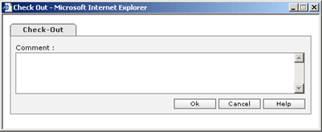

- In Folder/Document List select the document you would like to make versioned.
- Click on the 'Make Versionable' icon [ ] or select from menu Version->Make Versionable.
- Successful making document versionable will give the message as
'The selected document is versionable' in the Folder/Document List Task bar.
- The icon will get changed to the versioned document icon [ ].
- You can also select the folder and make the containing documents versionable.
- In Folder/Document List select the document you would like to CheckOut.
- Click on the 'CheckOut' icon [
 ] or select from menu Version->CheckOut.
] or select from menu Version->CheckOut.

- Successful CheckOut will give the message as 'Checked out operation was performed successfully'
in the Folder/Document List Task bar.
- The icon will get changed to the CheckOut document icon [ ].
- You can also select the folder and Checkout the containing documents.
- In Folder/Document List select the CheckedOut document you would like to CheckIn.
- Click on the 'CheckIn' icon [ ] or select from menu Version>CheckIn.
- Successful CheckIn will give the message as 'Checked in operation was performed successfully'
in the Folder/Document List Task bar.
- The icon will get changed to the CheckIn document icon.
- You can also select the folder and CheckIn the containing documents.
- In Folder/Document List select the checkedout document you would like to undo CheckOut.
- Click on the Undo CheckOut' icon [ ] or select from menu Version->Undo CheckOut.
- Successful Cancel CheckOut will give the message as
'Cancel Checked out operation was performed successfully' in the Folder/Document List Task bar.
- The icon will get changed to the versioned document icon.
- You can also select the folder and Cancel CheckOut the containing documents.
- In Folder/Document List select the versioned document for which you would like to view history.
- Click on the 'Version History' icon [ ] or select from menu Version->History.
- Document History page will be displayed with the versions.
- Press 'Close' to close the Document History.
- Click on the 'Version History detail' [
 ] icon to view the detail of the selected version.
] icon to view the detail of the selected version.